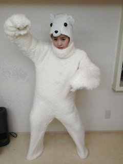

| 2012/05 15 Tue | 139回目*marika |
いつも読んでくださってる方、
初めて読んでくださった方、
コメントしてくださった方、
ありがとうございます♪
お疲れさまりかです。
まりかです。
うんうんしつこいね
すばっっ


今日はLessonでしたぁ

全握のリハです。
汗いっぱいかきました
 ぐだー
ぐだー
ぐだー
..........
万理華ちゃんは朝ご飯何食べる事が多い??
 今はヨーグルトにバナナときな粉混ぜたやつと
今はヨーグルトにバナナときな粉混ぜたやつと
豆乳コーンフレーク毎朝続けてるよ

べびたんの早起きの秘訣は？((((^^)
自分は起きれません。
こないだもねねに起こしてもらた

ホテルの時、朝めちゃくちゃ早い時
大音量にしたアラームを1分ごとに何回も設定します。
ほんとです、うそじゃないです

早く寝よう。
...て今何時だ。やっべ←
おばあちゃんは京都なんだ？( ´ω｀)
では今度は是非、京都で握手会をしませんか？(笑)
行きたいよーまた会いたいよー

べびたんは毎日いちごを食べるの？
家にあれば、むっしゃむっしゃ

まりっかのクッペ、パッセ、シャンジュマンは
バレエ用語ってことでＯＫ？
そーだよ

バレエ経験者じゃなきゃわからぬだろう‼
ここのダンス大好き

体調崩したりとかしてない？
メンバーが体調崩してしまうこと
あったりすると自分も心配になる><
からだ大事にしなきゃだよね。
ありがとうございます
最近可愛さが増したのはなんでやねん！？
う、うううそだろーーー⁈⁈
うそでも嬉しいいいぃぃぃいい

...........
ひめかーらりんーまりかー
前回の写真大好評で

2人とも嬉しそうだった
うはは
うはは
この流れで
リクエストの写真載せるぜぇ

しろくまりっくま
強い
しかしのろい
しかしすぐひっかく
そんでサーモンがすき
そんですぐ踊りだす
わ、笑うなよ‼
これ、真剣にポーズとってんだ‼
まゆ毛がりりしい

これでデートしちゃう⁇
では、お仕事、学校頑張ってきますだっ

では、おやすみなさい:)
まりか
コメント(120)
2012/05/15 00:24